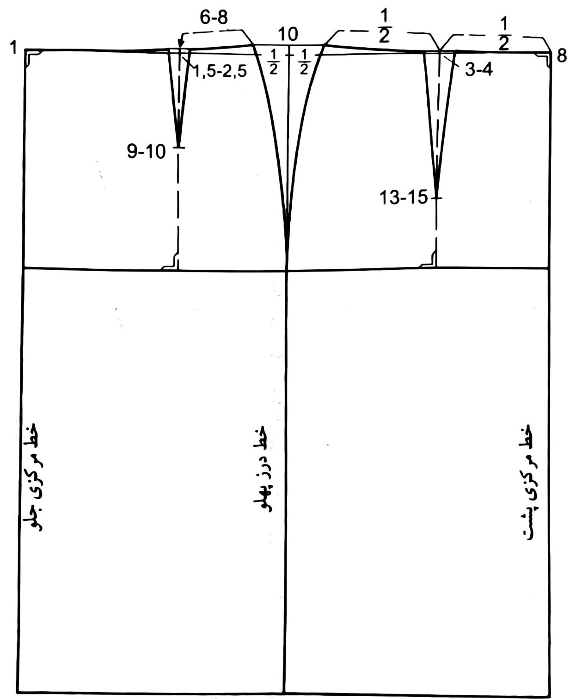
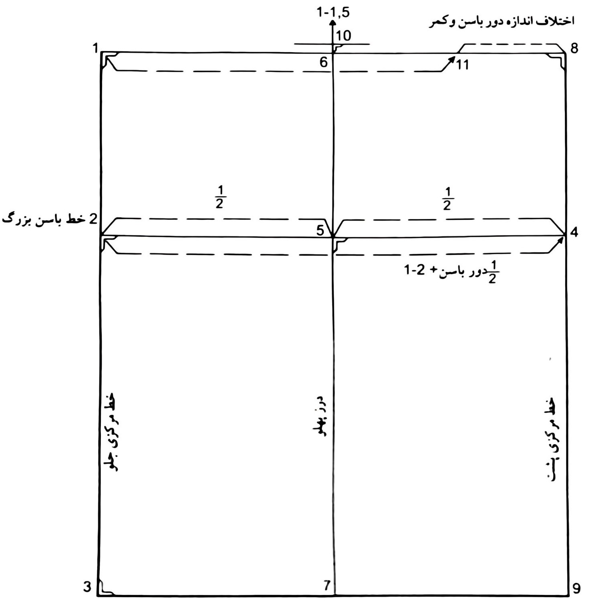

الگو دامن
آموزش الگوی دامن، رسم الگوی دامن گامبهگام
الگوی دامن یکی از مهمترین بخشهای آموزش خیاطی زنانه است. یادگیری رسم الگوی دامن پایه به شما کمک میکند تا فرم پایینتنه لباسها را دقیق و حرفهای طراحی کنید. با تسلط بر الگوی دامن میتوانید مدلهای متنوعی مانند دامن کلوش،دامن پیلی،دامن چین دار و دامن متریک را رسم کرده و بهراحتی بدوزید.
تعریف الگوی دامن
الگوی دامن در واقع طرح اولیهای است که شکل، اندازه و فرم اصلی دامن را مشخص میکند. این الگو بر اساس اندازههای واقعی بدن (دور کمر، دور باسن و قد دامن) رسم میشود و پایهٔ بسیاری از لباسهای زنانه بهشمار میرود، از پیراهن و سارافون گرفته تا کتدامن و مانتو.

مراحل رسم الگوی دامن
- اندازهگیری دقیق دور کمر، دور باسن و قد دامن.
- رسم مستطیل اصلی با توجه به قد دامن و یکچهارم دور باسن.
- مشخص کردن خط کمر و خط باسن روی الگو برای تعیین فرم بدن.
- رسم ساسونها برای فرمدادن به کمر و انحنای طبیعی بدن.
- اصلاح خط پهلو و رسم برش نهایی جهت آمادهسازی برای برش پارچه.
نکته مهم در آموزش الگوی دامن
دقت در اندازهگیری و رسم خطوط اصلی، مهمترین عامل در زیبایی فرم نهایی دامن است. الگوی دقیق باعث میشود لباس نهایی روی بدن خوش فرم، متناسب و راحت باشد.
